Как провести анализ конкурентов в Инстаграм за 5 шагов

- Определить своих конкурентов в Инстаграме*
- Как понять что за вами наблюдают конкуренты и что делать
- Как проанализировать конкурента и его рекламу самостоятельно: 5 этапов
- Проверить статистику по InstaHero
- Определить данные по TrendHero
- Почему важно знать конкурентов в Инстаграме*
- Анализ конкурентов с помощью парсинга
- #1 Insta-parser
- #2 Zengram
- #3 LiveDune
- #4 Instaplus.pro
- Неявные признаки конкурента: 3 секрета
- Как обойти своих конкурентов
Анализ конкурентов в Инстаграме* можно провести самостоятельно, если заранее просмотреть страницы тех, кто предположительно подходит по той же тематике. Или же, найти конкурентов и посмотреть активность на их страницах с помощью онлайн-сервисов.
Определить своих конкурентов в Инстаграме*
В каждой тематике есть крупные и средние блоги. Начиная развивать свой профиль в выбранном направлении, новый блогер должен обращать внимание на авторов, которые уже достигли отметки в 100 000 подписчиков и обладают постоянной активностью. Но начиная, нужно выделить другие небольшие страницы, которые на старте составят конкуренцию. Как определить конкурентов:
- выделить основные теги по которым продвигаются владельцы других блогов;
- просмотреть страницы, определить активность;
- ознакомиться со всеми разделами, включая Reels и IGTV, где могут быть записи конкурентов.
Соперниками становятся те, кто постоянно развивается и использует базовые механизмы для продвижения. Это может быть запуск платной рекламы, работа с обратной связью и продажа информационных продуктов.
Пример: как найти конкурентов в Инстаграме* по тематике «Кулинария»:
- Зайти в Инстаграм* – вписать в поиске «Готовка», «Кулинария», «Рецепты».
- По каждому запросу выделить активные профили.

- Составить список и регулярно отслеживать активность.
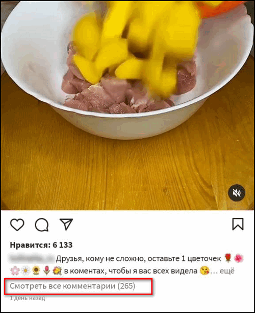
Один из способов постоянного мониторинга – создать второй аккаунт и подписаться. Так автор страницы будет в курсе последних изменений в блогах.
Как понять что за вами наблюдают конкуренты и что делать
Отстроиться от конкурентов реально, но они всегда найдут способ, как продолжить наблюдение. Как и в другом бизнесе, на площадке нужно держать статус и не обращать внимания на влияние соперников. Но чтобы выделить, кто из конкурентов наблюдает:
- Зайти в свой профиль – перейти в раздел: «Подписчики».
- Посмотреть, кто из фанатов обладатель бизнес-статуса.
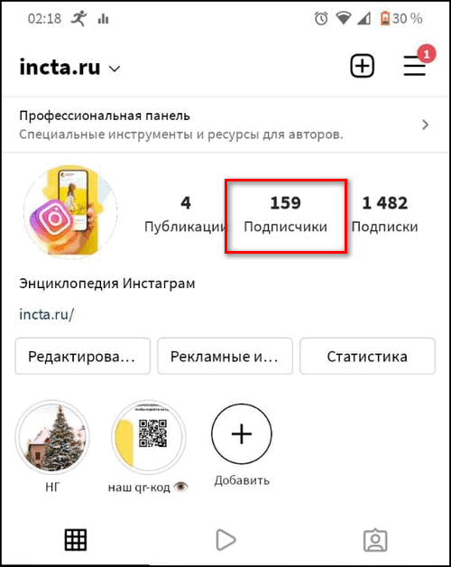
- Переходить по страницам, которые оформлены как продающие.
Нередко соперники даже не скрывают своих целей и подписываются с рабочих страниц. Это может повредить ведению страницы лишь в таких случаях:
- демпинг цен. Конкурент специально занижает цену продуктов, после размещенного прайса;
- привлечение клиентов с помощью комментариев. Здесь возможны и негативные оплаченные отзывы, создание конфликтных бесед в отзывах, такие комментарии нужно удалять;
- накрутка. Но определить кто именно её установил не получится.
Если владелец профиля не хочет вступать в конфликт, он может просто ограничить действия конкурентов в своем профиле:
- Настройки – Конфиденциальность.
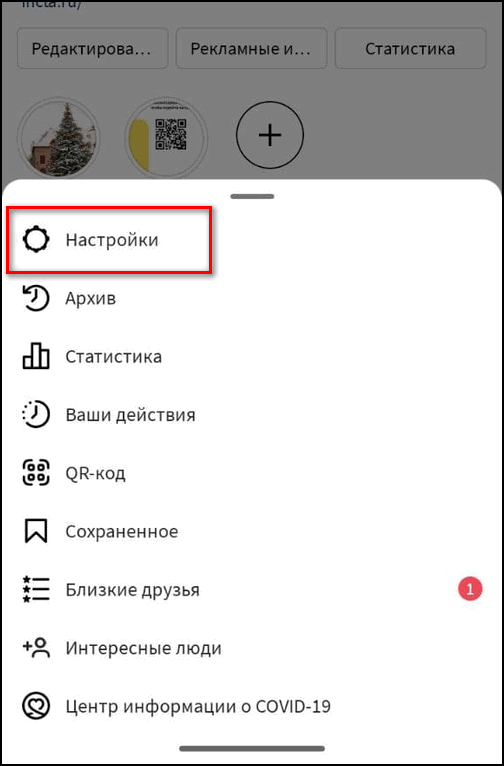
- Страницы с ограниченным доступом – ввести ники конкурентов.
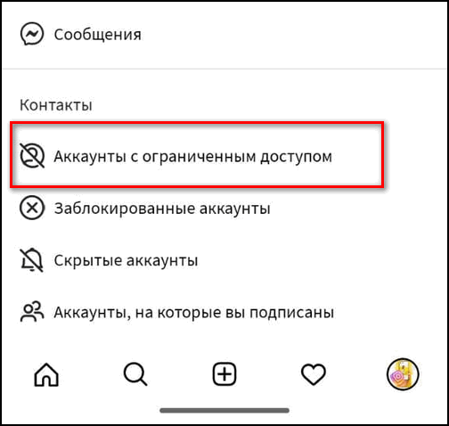
Теперь те не смогут оставлять комментарии, просматривать последние размещенные Истории.
Как проанализировать конкурента и его рекламу самостоятельно: 5 этапов
Сервисы для анализа конкурентов помогают в проверке и автоматически выводят данные. Но если владелец страницы желает самостоятельно провести мониторинг, ему нужно выписать несколько метрик и наблюдать за аккаунтом соперника на протяжении недели. Пять этапов, как проверить конкурента:
- Определить конкурентоспособность. Какое количество комментариев под постами, качество отзывов и лайки.
- Регулярность размещения публикаций. Как часто конкурент размещает новые записи, добавляет Stories.
- Сотрудничество с другими блогерами, рекламные кампании. Есть ли в профиле реклама других блогов;
- Запуск промоакций. Можно проверить запущенную рекламу через настройки страницы;
- Другие платформы. Возможно, автор активнее ведет страницу в Facebook*, Tik Tok или Вконтакте.
Чтобы посмотреть рекламу конкурентов в Инстаграме*:
- Зайти в профиль к выбранному пользователю.
- Нажать сверху три точки – Данные аккаунта.
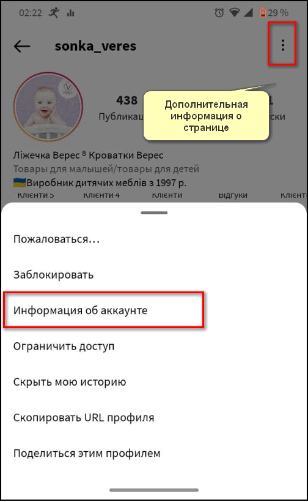
- Запущенные промоакции – перенаправят на Facebook*.
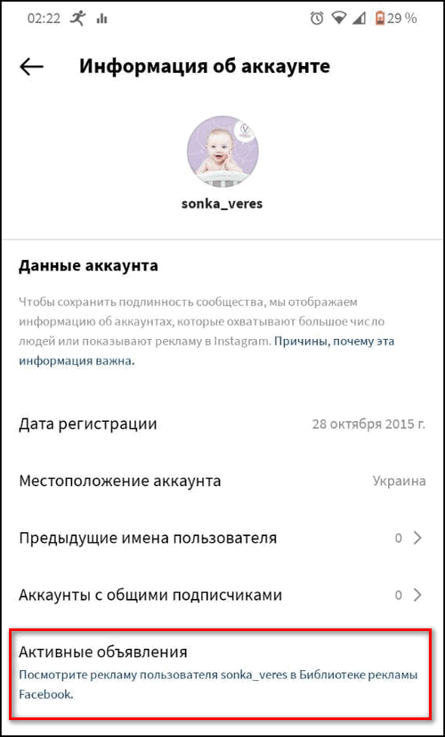
- Открыт список текущих промоакций.
Если пользователь не увидел, какие есть текущие промоакции, значит конкурент либо ими не воспользовался, либо в данный момент они попросту не запущены.
Проверить статистику по InstaHero
С помощью сервиса InstaHero можно просматривать статистику своего профиля, чужого. Если указать аккаунт конкурента, то появится базовая информация о последних изменениях на странице. Как отследить активность конкурента:
- Зайти на сайт– выбрать инструмент.
- Нажать: «Добавить профиль» - указать никнейм конкурента.
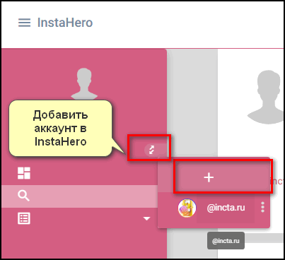
- Подождать, пока сервис соберет нужную информацию по пользователю.
- Посмотреть, какие показатели активности были за последний период.
InstaHero отображает, какое количество бизнес-аккаунтов подписано, массфолловинг, предполагаемую целевую аудиторию. Если автором другого блога был неверно подобран конкурент, то в разделе «ЦА» он увидит данные, которые отличаются от его предполагаемых.
Определить данные по TrendHero
Сервис TrendHero не менее популярен для проверки показателей чужих страниц. Владельцу профиля нужно указать никнейм конкурента через раздел «Дашборд». Есть два варианта, как в TrendHero подключить аккаунт конкурента:
- через вкладку: «Поиск блогера»;
- проверка с помощью «Дашборд».
С помощью первого варианта можно быстро проверить аккаунт блогера, увидев данные по вовлеченности аудитории. Найти страницу конкурента и отследить:
- Создать аккаунт в TrendHero или авторизоваться.
- Нажать по разделу: «Дашборд».
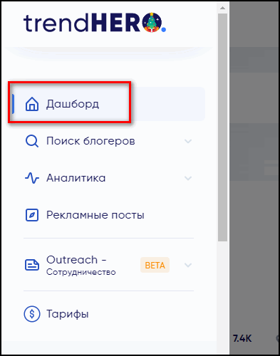
- Ввести в строку поиска название блога – Проверить.
- Подключить аккаунт к своей учетной записи TrendHero.
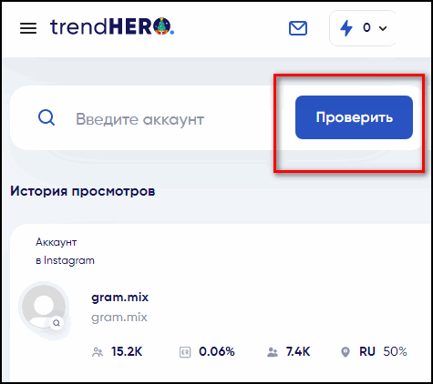
Последний пункт необязательный, если владелец страницы хочет одиножды проверить конкурента. Но в сервисе есть одно ограничения – он не проверяет страницы до 500 подписчиков, поэтому посмотреть данные некрупных блогов не получится.
Почему важно знать конкурентов в Инстаграме*
Чтобы продвигать в социальной сети, владелец блога, интернет-магазина должен знать своих конкурентов. Проанализировав их, можно определить ценовую политику, особенности продвижения.
К примеру: если профиль конкурента развивается активнее, то владельцу другого блога нужно обратить внимание на количество рекламы, тематики публикаций и контент.
Конкуренты могут:
- максимально снижать цены;
- красть идеи оригинальных упаковок, подарков и приглашений для клиентов;
- использовать те же идеи для рекламных макетов;
- писать неправдивую и порочащую информацию;
- переманивать аудиторию.
Все это влияет на дальнейшее продвижение и создает негативную репутацию о владельце второго аккаунта.
Анализ конкурентов с помощью парсинга
Парсинг – идеальный вариант, как провести анализ конкурентов в Инстаграме*. С его помощью собирают данные о подписках и подписчиках, публикациях и реакции аудитории. Проще говоря, с помощью парсинга можно изучить вовлеченных пользователей и воспользоваться теми же способами продвижения, что и у конкурента. Другие преимущества парсинга:
- узнать, какие публикации были наиболее популярны;
- определить ботов и активных подписчиков;
- определить способ продвижения конкурентов.
Сбор аудитории конкурентов в Инстаграме* проводят с помощью онлайн-сервисов или программ. Клиент получает таблицу или файл, который содержит никнеймы, текстовое сообщение. Например, если воспользоваться базой активных подписчиков, то можно перейти к ним на страницу и посмотреть, какие у них интересы. Далее, воспользоваться этой информацией и сформировать потенциальную целевую аудиторию.
#1 Insta-parser
Отдельный продукт Zengram – Insta-Parser - лучший на данный момент сервис на рынке для парсинга. Направлен на работу с аудиторией Инстаграма* и помогает в подборе данных от конкурента.
Его отличительное преимущество – выбор данных по геометкам, хештегам, а также сбор контента: описания к постам или фотографии.
Таблица анализа конкурентов в Инстаграм* будет доступна на сайте, где можно скачать не только текущую, а и получить историю предыдущих проверок.
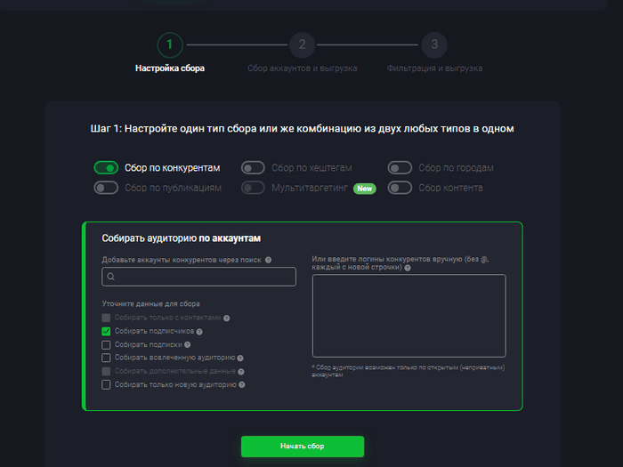
Возможности парсера:- поиск потенциальной аудитории по хештегам, городам;
- сбор контента: фото-материалы и описания к постам;
- фильтрация аудитории по наличию аватарок, текущих записей в Историях;
- работа с несколькими страницами;
- отсутствие требования по подключению аккаунта;
- изучение профилей конкурентов.
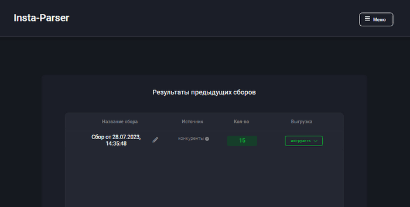
Чтобы начать работу, пользователю нужно авторизоваться любым удобным способом: через социальные сети или воспользоваться регистрацией с email и сгенерированным паролем. На главной появится список фильтров и возможность подобрать параметры. Сервис предлагает пробный бесплатный период, где можно посмотреть стандартный отчет по статистике чужого аккаунта или собрать аудиторию нескольких конкурентов.#2 Zengram
С помощью парсера от Zengram можно защитить страницу от спама, собрать подписчиков, посмотреть аккаунт конкурента и изучить статистику. Открывая сервис, пользователю будет предложено несколько продуктов, где есть анонимный просмотр Историй, защита от спама и ботов. Парсер от Зенграм поддерживает фильтры:
- количество подписчиков аккаунта;
- максимальное число подписок;
- отбраковка аккаунтов: коммерческие или закрытые;
- пол аккаунта: выбрать половую принадлежность потенциальной аудитории.
Пользуясь фильтрами, пользователь сможет верно выбрать ЦА и посмотреть данные по параметрам: интересные страницы, где больше всего оставляют комментарии. Как воспользоваться парсером:
- Зайти в сервис – авторизоваться.
- Добавить аккаунт – запустить парсер.
- Указать параметры фильтрацмм базы
Максимальный размер базы составляет 5000 аккаунтов. После того как парсер соберет данные, нужно открыть отправленный файл с помощью приложений «Таблицы» от Google или Microsoft.
#3 LiveDune
Подписчиков конкурента в Инстаграм* можно получить с помощью сервиса LiveDune, который отображает подробную статистику. Направлен на анализ конкурентов, учитывая рекламные кампании.
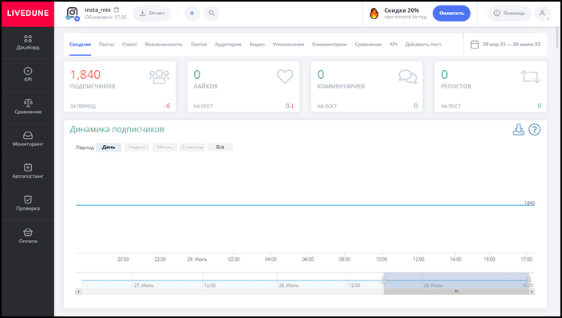
Основные разделы:- сравнение. Указать два аккаунта, которых система сравнит по размеру аудитории, активности;
- KPI. Уровень полезного действия от партнеров;
- мониторинг. Постоянное наблюдение за профилем;
- автопостинг. Автоматическое размещение записей, изначально добавленных владельцем аккаунта;
- проверка. Определить накрутку на страницу.
Чтобы получить бесплатные проверки, нужно связать сервис со своим аккаунтом. Доступен просмотр чужой статистики, чтобы определить какой контент наиболее популярен среди аудитории, какие темы интересны подписчикам.
#4 Instaplus.pro
Мобильное приложение, которое позволит накрутить аудиторию и получить статистику по аккаунту. С его помощью открывается доступ к автоматической накрутке подписчиков, лайков и комментариев. Чтобы воспользоваться, нужно скачать и установить приложение в формате APK на смартфон. Плюсы использования:
- автоматические лайки, комментарии и подписчики;
- возможность установить лимиты на действия;
- выгрузка аудитории по конкурентам;
- быстрый доступ, без необходимости подключаться к компьютеру или ноутбуку.
База будет выгружена в текстовом формате, который можно открыть на смартфоне. Также в приложении есть фильтрация по загруженной пользователем базе.
Неявные признаки конкурента: 3 секрета
Сделать анализ конкурентов в Инстаграме* можно самостоятельно, если определить верно страницы пользователей, которые помешают в продвижении. Кроме крупных блогов, в социальной сети есть небольшие страницы, но быстро развивающиеся. Чтобы выделить страницы конкурентов, нужно знать три секрета:
- просматривать страницы в поиске по основному запросу. Название и идея ниши;
- учитывать комбинированные блоги. Которые работают в нескольких направлениях одновременно;
- определять вторые аккаунты крупных блогеров.
Инстаграм* нередко блокирует крупные блоги, а это значит что у крупных блогеров зачастую есть запасные. Это могут быть скрытые страницы, но о них обычно есть упоминания в Сторис или актуальном. Или же, тематические каналы, которые с последним обновлением также доступны в социальной сети. Чтобы найти их, нужно в поиске Директа ввести предполагаемое название и посмотреть, какие чаты будут предложены.
Как обойти своих конкурентов
Один из вариантов, как избавиться от конкурентов – использовать уникальное торговое предложение. В любой сфере можно предложить услугу или товар, который привлечет клиентов.
УТП – то, что работает постоянно и не зависит от акций, праздников. Отдельные приложения, которые направлены на временную выгоду – оффер, но они присутствуют практически в любом интернет-магазине, блоге.
Как найти УТП своего продукта и правильно его представить аудитории:
- определить, что отличает продукт от других;
- как можно улучшить продукцию: от выбора оформления до комплектации;
- сделать несколько публикаций, указав на эту особенность.
Например: продавая бьюти-боксы в Инстаграме*, владелец магазина может предложить клиентам оформление на выбор. В качестве бонуса добавлять: открытки, сладости или пробники. Но это должно сочетаться с основной тематикой блога. Если тема магазина «корейская косметика», то можно добавлять корейские сладости или наклейки.